Quickstart — Segmenting Data and Generating Connectivity Networks
This guide introduces NetTracer3D by walking through a complete worked example, from loading an image through segmentation to generating and analysing a connectivity network.
Launching NetTracer3D
After Installation, launch NetTracer3D from the command line:
nettracer3d
This opens the main application window.
Interface Overview

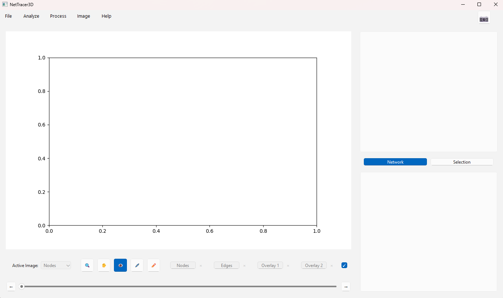
The interface is divided into five regions:
Canvas / Main Visualization Area (left): the image viewer window, where the 3D stack is displayed as 2D slices.
Control Panel (bottom): widgets for interacting with the image viewer.
Tabulated Data (top right): where data tables from analysis are placed.
Network Data (bottom right): the network graph visualization, any subselections, and tables for both.
Menu Bar (top): options to load/export data and run analysis.
Four elements of the top right of the menu bar are worth noting:
The ⤴ button ejects the main canvas and control panel into a separate window, allowing them to be enlarged without the tables getting in the way.
The camera button saves a 2D TIFF of whatever is currently displayed in the canvas.
The file button prompts for a
.xlsx/.csvspreadsheet to load into the top right data tables. Since some tables can be used to interact with the nodes, reloading them is often useful.The menu bar also displays dynamic information: your active session on the left if you are working out of a specific directory, and on the right the xy and z resolutions, the current slice, and — when the scalebar is toggled on — the current mouse coordinates.
Note
When running from the command line, check the command window for printed updates on what NetTracer3D is doing. This does not apply to the compiled version.
The Control Panel

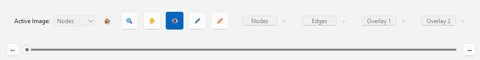
The control panel along the bottom contains the following widgets:
Active Image
Click the carat to select which image is active. Most processing and analysis functions run on the active image by default, and clicking or drawing in the image viewer window references the active image.
Scale bar
Click to add a scale bar to the canvas, scaled by your xy resolution to represent true distance. Click again to add an unscaled tiled grid representing voxel positions; again to remove the scalebar while retaining the grid; and once more to remove the grid and return to the default view.
Home
Resets the view to default, useful if you become stuck in an unusual zoom state. Shortcut: Shift + right click while in zoom mode.
Zoom (magnifying glass — shortcut Z)
The mouse wheel zooms in any mode, but a dedicated widget is provided primarily for laptops. Press Z or click the magnifying glass to enter zoom mode: left click zooms in, right click zooms out, and dragging zooms to a specific area.
Pan (hand — shortcut middle mouse)
Press the middle mouse button or click the hand widget to enter pan mode, then drag along the image viewer window to move around the image.
Highlight overlay display (eye — shortcut X)
Press X or click the eye widget to toggle visibility of the highlight overlay. Clicking objects in the nodes or edges channels (and certain other functions) generates a yellow highlight denoting the current selection.
Image markup (pen)
Click the pen widget to enter markup mode. Clicking the active image writes values of 255 directly into the image data at the clicked location. Additional functionality in pen mode:
Left click erases positive data, writing 0 directly into the image.
Ctrl + mouse wheel enlarges the draw/erase area.
Press F to swap to the fill can. Clicking with the fill can writes 255 into the entirety of any background (0-value) region connected to the clicked point. In fill can mode only, Ctrl + Z undoes the most recent action.
Press D in either pen or fill can mode to enable the 3D version of these tools. The 3D pen draws across several slices at once; the number displayed above the 3D pen indicates the span (a value of 5 writes into the current slice, two above, and two below), adjustable with the mouse wheel. The 3D fill can fills the entirety of a 3D void — essentially any continuous hole in 3D. As with the 2D fill can, Ctrl + Z undoes the last action while still in fill can mode.
Threshold / segment (pencil)
Opens the menu for intensity thresholding or machine-learning segmentation. See the Threshold/Segment guide for details.
Channel widgets (Nodes, Edges, Overlay1, Overlay2)
Toggle channel visibility. The x widget beside each channel button prompts to delete that channel.
Scrollbar
Drag the central knob to scroll through the 3D image stack, or use the arrows on either side to advance one frame at a time. Shift + mouse wheel also scrolls the stack; Ctrl + Shift + mouse wheel scrolls faster.
Loading an Image
Select File → Load, or drag images into the active image directly from the file explorer. The load menu offers:
Load Network3D Object
Load Nodes
Load Edges
Load Overlay 1
Load Overlay 2
Load Network
Load from excel helper
Load Misc Properties
Options 2–5 correspond to the four image viewing channels supported by
NetTracer3D. When beginning with a new image to segment, load it into the nodes
channel with Load Nodes. This prompts you to browse for an image in .tif
/ .tiff (for microscopic data), .nii (if nibabel is installed), or
.jpg / .jpeg / .png format.
Important
If your image has real value scaling (i.e. microns per pixel), those values will not populate automatically and should be assigned in Image → Properties before any processing occurs.
We begin by loading a cartoon rendition of a slime mold as our example:

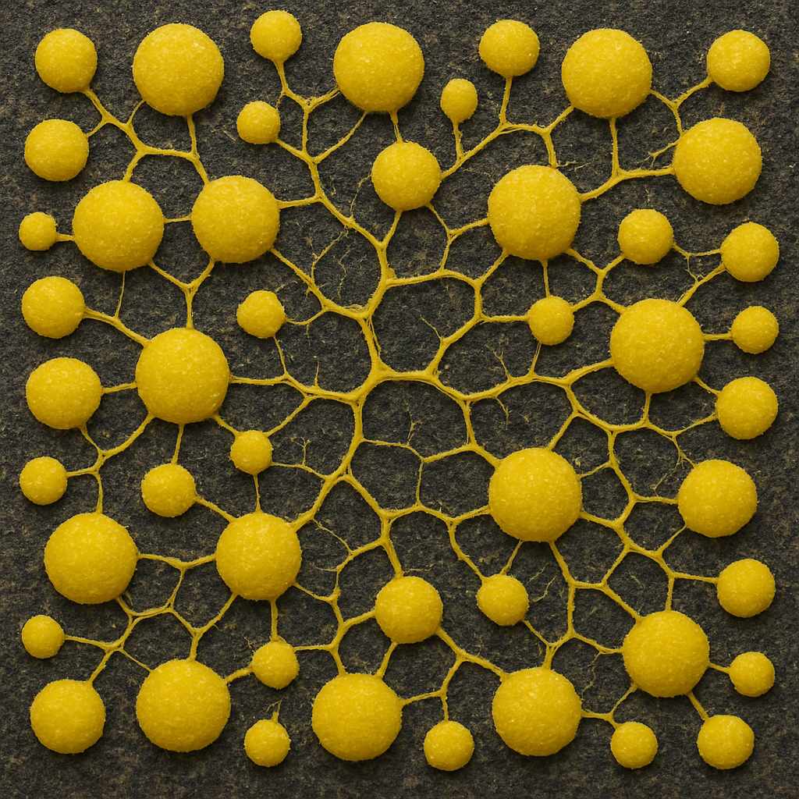
Use File → Load Nodes. Because this is an RGB image, answer yes to the prompt asking whether it is a color image, so that it is converted to grayscale.

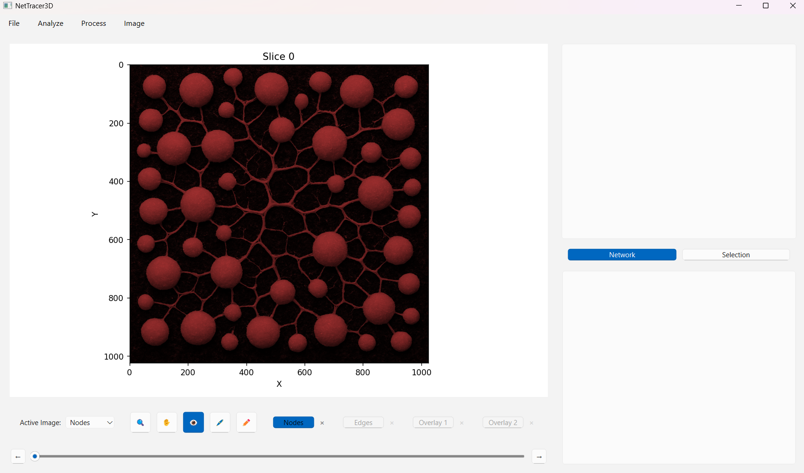
Note that the image viewer window displays nodes images through a red filter by default, although this can be changed.
Segmenting Data
Most algorithms in NetTracer3D expect either binary images (all values 0 or positive) or labeled images — grayscale images in which objects have been grouped into distinct labels (1, 2, 3, and so on). Presegmented data can be used directly; our data is not yet segmented, so we will use NetTracer3D’s segmentation options to process it.
Click the pencil widget to begin. The following window appears:

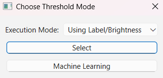
Execution mode selects between direct intensity thresholding (for images with good SNR, or to sort out specific labels) and volume-based thresholding (for already segmented images, to remove noise or select a specific size range of objects). Press Select to open the corresponding threshold window.
Machine Learning segments by feature morphology and is the more general option, applicable to most image types. We will use it here.
Using the Machine Learning Segmenter
Machine learning segmentation can be executed on any image in the nodes channel. It requires the use of Overlay1, Overlay2, and the highlight overlay, so segmenting images in a session separate from binary data processing is recommended.

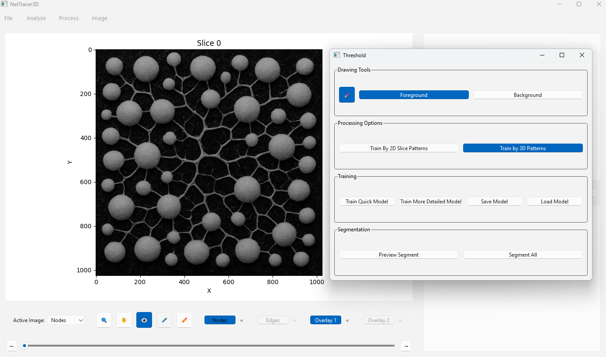
Referencing the image above, the segmenter uses the following channels and options:
Nodes: contains the data of the image being segmented.
Overlay1: contains the training data.
Overlay2: receives the final segmentation once generated.
Highlight Overlay: displays segmentation previews.
Brush (Drawing Tools): enters brush mode, which works like the pen mode described above but without the 3D and fill can features. Click in the image viewer window to mark objects to keep (foreground) and objects to exclude (background). This training data is written directly into Overlay1, with values of 1 representing foreground and 2 background. Right click erases markings, and Ctrl + mouse wheel changes the brush size.
Foreground (Drawing Tools): sets the brush to mark foreground, denoted by green markings. Press A to toggle with background.
Background (Drawing Tools): sets the brush to mark background, denoted by red markings. Press A to toggle with foreground.
GPU: with a working CUDA toolkit and NetTracer3D installed with the cupy option, segmentation runs on the GPU. This speeds up Segment All considerably, though model training and preview segmentation are slightly slower due to numpy-to-cupy bottlenecking. Since Segment All is the limiting step, GPU use is strongly recommended where available — for reference, a 6.5 GB image took roughly 10 minutes on a 5070 Ti.
Train by 2D Slice Patterns (Processing Options): trains the model using 2D feature maps.
Train by 3D Patterns (Processing Options): trains the model using 3D feature maps.
Train Quick Model (Training): trains the model to segment your image based on the regions marked in your training data.
Train More Detailed Model (Training): as above, with additional feature training.
Preview Segment (Segmentation): segments the image as a preview without interrupting the current training session, allowing you to assess whether the model needs further training. The preview appears in the highlight overlay, with foreground in yellow and background in blue.
Pause/Resume (Segmentation): pauses or resumes the preview segmenter.
Segment All (Segmentation): after a warning, pauses the training session and segments the entire image with the current model, placing the binary result in Overlay2. Save your images first (File → Save Network 3D Object As), as the process can only be interrupted by terminating the program.
Save Model (Saving/Loading): saves only the extracted training data from the current model, as an
.npzfile.Load Model (Saving/Loading): loads saved training data into a new model, which can then receive additional training from separate images while retaining its previous data. Loaded quick models can only be layered onto new quick models, and loaded detailed models onto new detailed models; combining model types causes the previous model data to be ignored.
Load Image… (Saving/Loading): loads a new image into the nodes channel for segmentation. This load option supports RGB images (H&E stains, for example), which are not normally permitted in the nodes channel.

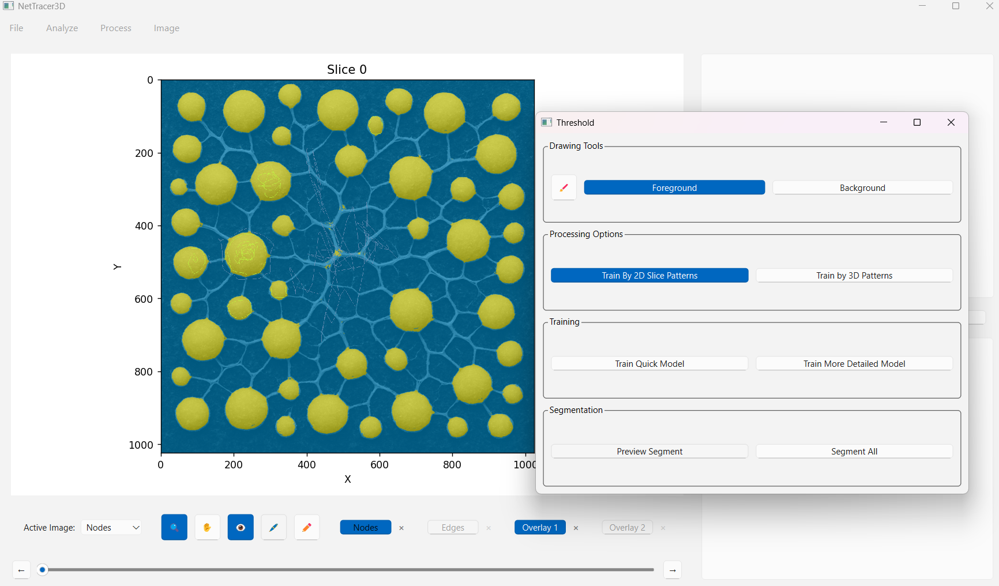
Above: an ML segmentation in progress. Foreground is marked in green and background in red. Yellow regions have been selected by the current model as foreground and blue as background. Longer training sessions produce more specific segmentation results.
To save the resulting segmentation, use File → Save Overlay2 As. To save the training data for later reuse or retraining, use File → Save Overlay1 As. File → Save Network3D Object As saves all images together.
We will save the segmentation above for use as the nodes in our network.
Denoising the Segmentation
Some noise has slipped through the segmentation. NetTracer3D offers several options for cleaning up binary segmentations; here we use volume thresholding.
Open a new instance of NetTracer3D and load the binary slime mold segmentation into the nodes channel.
Click the pencil widget, change Execution Mode to Using Volumes, and choose Select to open the volume threshold window.
When prompted, allow the system to label the nodes, assigning each binary object a distinct numerical value.

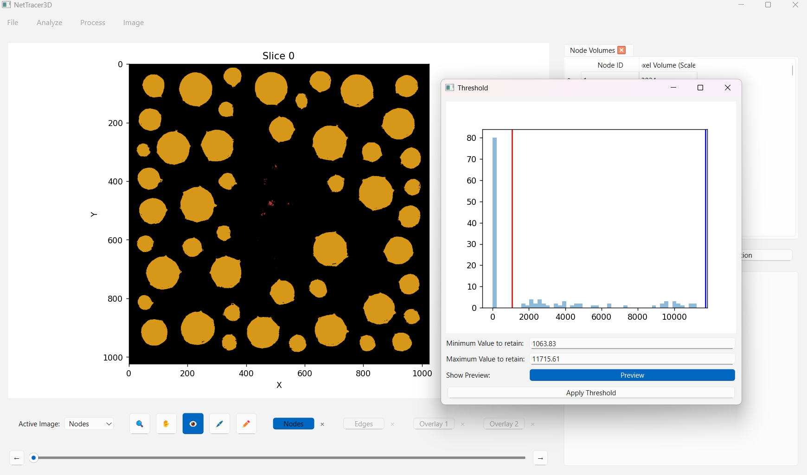
Above: de-noising with the volume thresholder. The red bar excludes the small objects; on the left, the objects to be kept are shown in yellow.
The displayed histogram represents the distribution of object volumes in the image. Drag the red bar to exclude low-volume objects and the blue bar to exclude high-volume ones.
Minimum and maximum values to retain may also be entered manually.
Preview shows the included objects in yellow in the highlight overlay.
Apply Threshold segments the image as shown in the preview.
Applying this threshold and then using Process → Image → Fill Holes to close any remaining holes in the binary image yields the finished segmentation:

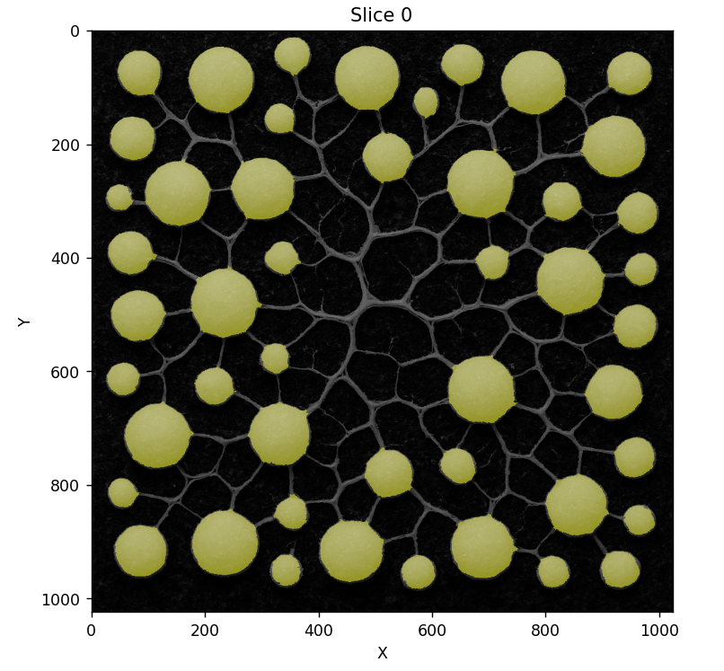
Types of Networks
NetTracer3D can produce four flavors of network, each converting a static image into an undirected network graph.
The connectivity network — node objects are connected via a second image (the edges image).
Ideal for objects such as cells or functional tissue units (ganglions, glomeruli, liver lobules) interconnected by a secondary structure such as nerves, blood vessels, or lymphatics.
Requires two images, each segmented.
The proximity network — nodes are connected based on distance to one another.
Ideal for evaluating general spatial arrangement, such as cells in an H&E stain or in microscopy data such as CODEX.
Less useful for chaotically arranged objects (for example, every cell in a poorly differentiated neuroendocrine tumor), though restricting the network to a single cell type can reduce the chaos.
The branchpoint network — nodes are created at branch vertices and connected based on adjacency within the branch.
Ideal for branched structures such as nerves, vessels, lymphatics, or roots. These should be segmented into binary first; NetTracer3D handles branch assignment.
Describes branching behaviour well, but loses morphological information.
The branch adjacency network — branches themselves become nodes.
Similar to the above, but connections are based on whether an entire branch touches another branch.
More useful than the branchpoint network for interacting with branches directly, though the branching structure is partly obscured, since the order in which branches arise is not preserved.
The Connectivity Network
As with the nodes, the edges are segmented from the image — the same steps as above, selecting the connection regions rather than the nodes. This is the image through which the nodes will be connected; in practice it is often a different channel, such as an overlapping image of nerves or vessels. In this demonstration the same image is used for both.
Load the edges with File → Load Edges, then select Process → Calculate → Calculate Connectivity Network.

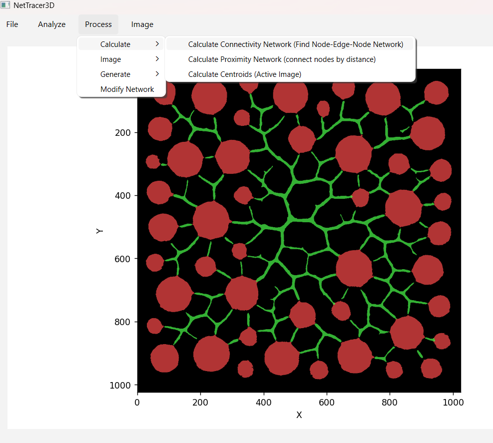
Enter the following parameters and execute the network generation:

These parameters tell the nodes to search 30 pixels outwards (node search param) for edges to connect to. Nodes sharing an edge are connected in the resulting network. For more information on this algorithm, see Process → Calculate Network → Calculate Connectivity Network
This yields the following network:

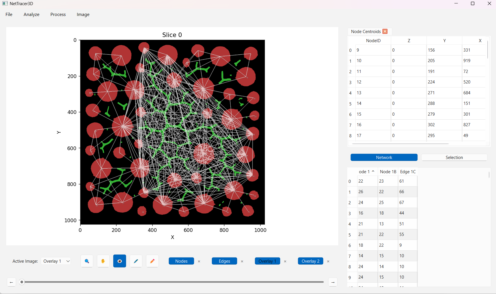
The nodes and edges images are adjusted according to how the network search parameter used them, ensuring consistency with the output. Overlay1 receives a binary overlay displaying the direct network connections as white lines. In the bottom right table, the first two columns give the IDs of the linked nodes and the third gives the ID of each pair’s associated edge. In this case the majority of nodes are joined through a large hub edge in the center, while nodes along the sides have less direct connections.
Dealing With Trunks
In biological images, nodes in connectivity networks often merge into central trunks, since nerves and blood vessels eventually return to a central structure. Trunks may vastly overrepresent connectivity in such networks; whether this is true of a given dataset requires appraisal. Several strategies are available.
Converting all edges to nodes
The most robust approach is to convert all edges in the network into nodes. Select the Edge → Node option when first computing the network, or apply it afterwards through Process → Modify Network:

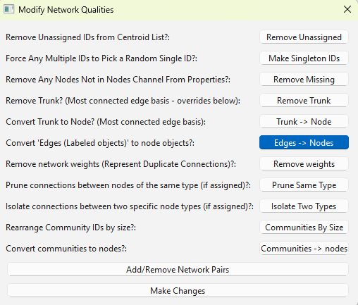
The result is shown below. All edges have become nodes, and the new edge-derived
nodes retain an edge identity in the node_identities property.

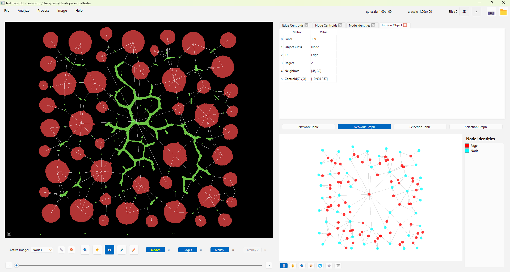
Using edges as nodes alters the network dynamics somewhat: clustered regions become oriented around hubs instead. This is worth keeping in mind when computing statistics.
Auto-Trunk
The Auto-Trunk button in the Calculate Connectivity Network menu handles trunk elements automatically, forcing them to prefer connections among local nodes while still permitting connections between distant nodes through the trunks when no closer nodes are present. This option is slower, but handles trunk elements logically without converting edges to nodes or arbitrarily converting or removing trunks. The result in this case:

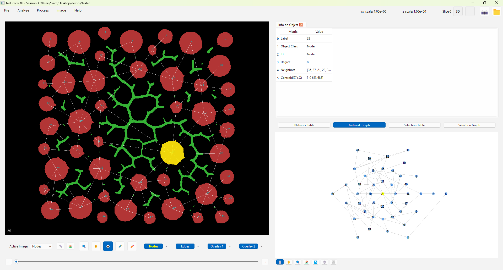
Converting the trunk to a single node
The central edge trunk can also be converted into a single node using Process → Modify Network:

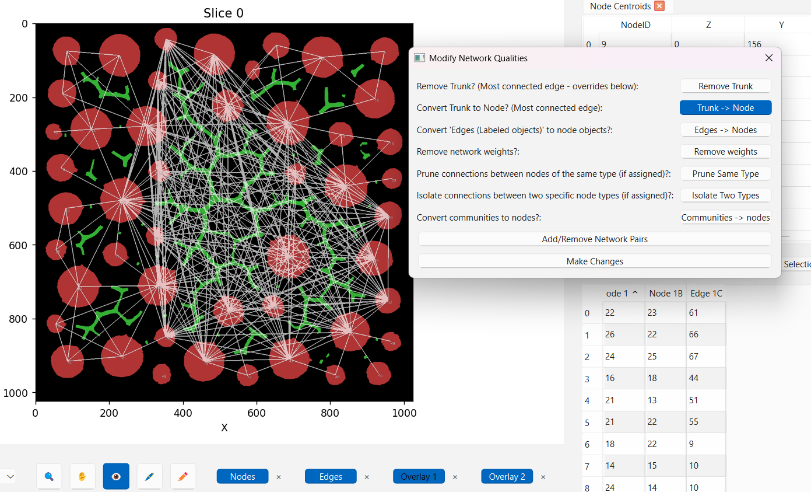
The trunk becomes a node. The resulting image with network overlay, alongside a graph of the network, is shown below:

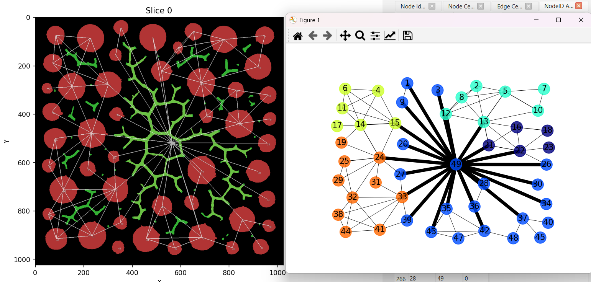
This network was displayed using the ‘Analyze → Show Network’ option with louvain community detection.
Trunks may also be removed entirely, before or after network generation, if their presence seems unnecessary — though the options above are generally preferable.
Loading the original image back in with the overlay shows how the image information has been compressed into a set of connected integers:

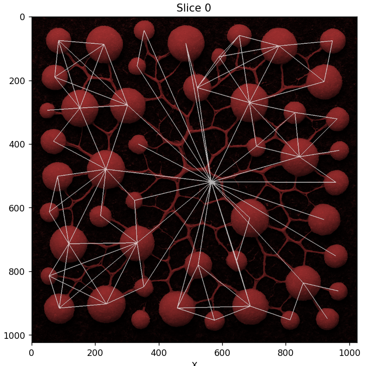
An image like this would not be difficult to label manually, but the same task across thousands or tens of thousands of nodes in a 3D image is another matter. This is where NetTracer3D excels. The image below shows one such application: neural networks between groups of glomeruli in the human kidney, generated from 3D lightsheet images.

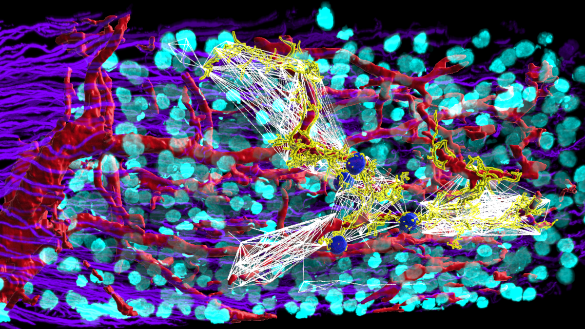
Analysis
Several straightforward approaches are available for analysing connectivity network data. From the analyze menu, choose Stats → Network Related → Network Statistics Histograms to generate histograms describing the network:

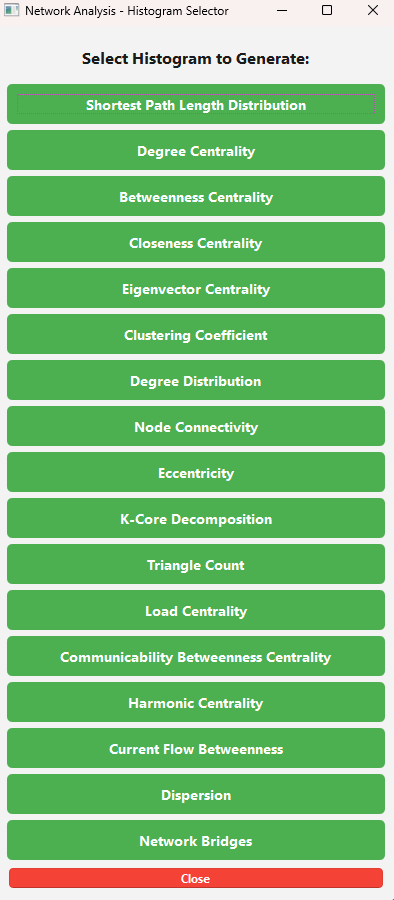
Each green button yields a histogram of the nodal distribution of a network property. Some are slow to compute for large networks, and some may be skewed when the graph contains multiple disconnected components — any affected histogram notes this in its title. To remove small, isolated components, right click the largest component in the network graph view in the bottom right and choose Isolate Component.

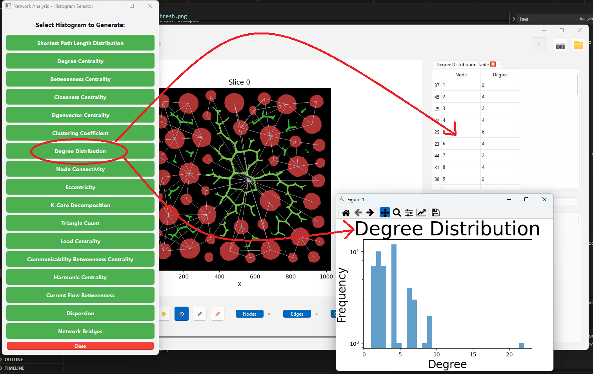
Histograms can be compared between datasets to identify observable differences, and can also be used to threshold the nodes to find objects of interest. In the example below, the degree distribution shows how many connections each node makes; the underlying data is placed in the top right table.
NetTracer3D is designed to be highly interactive. Any upper right table with the
structure {col 1 - integers : col 2 - numbers} can be used to threshold the
nodes, which includes all of these network histograms.

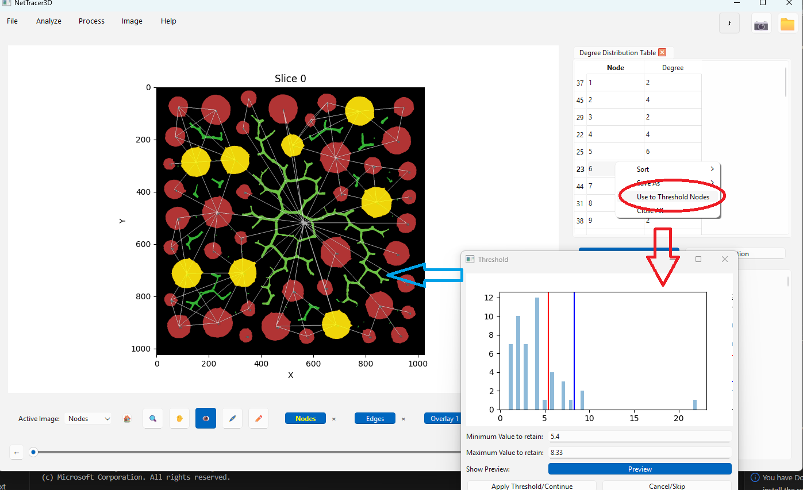
Right click the table and choose Use to Threshold Nodes, then select the region of the histogram to keep in the interactive thresholder. Pressing Apply Threshold reduces the nodes channel to that set of nodes — back up your original nodes first. This does not alter the underlying network data. To keep the selection without eliminating any nodes, simply close the threshold window; the selection remains in the highlight overlay, where it can be exported or used for anything else the highlight overlay supports.
If the nodes channel is the active channel, the subgraph of connections between the selected objects is sent to the selection table in the lower right, which is useful for pulling out a specific subregion of the network.
Right clicking the upper right table also offers the option to save the table as a spreadsheet. The folder button in the top right loads spreadsheets in the same format, allowing a saved table to be reused for thresholding.

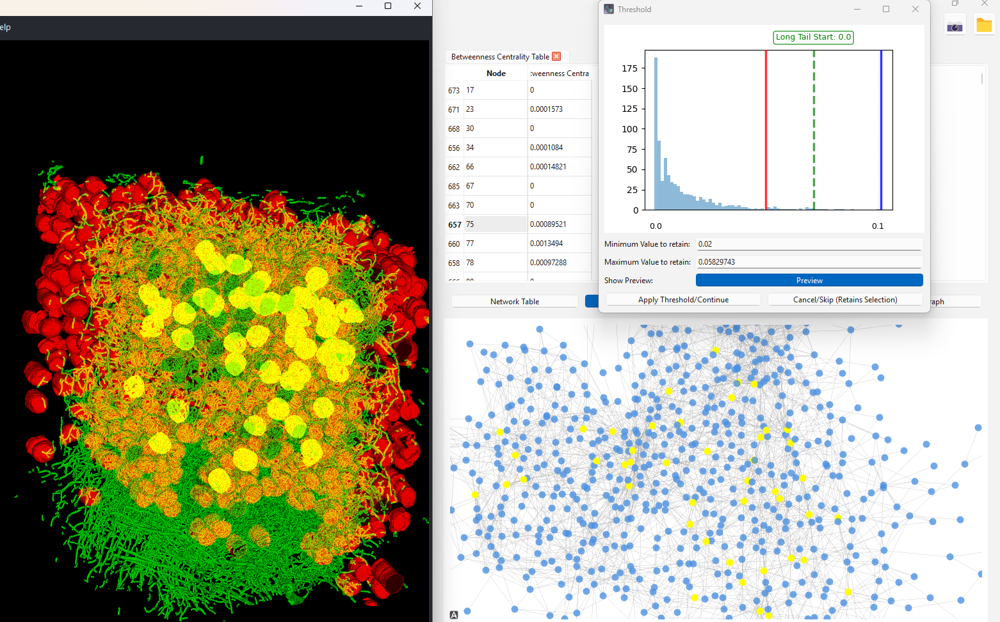
Above: thresholding for objects with high betweenness centrality in a kidney-glomeruli neural network.
If you are unsure which histogram to create, use Compute all analysis and export to CSV to view them all together.
Nodes may also be grouped into communities, which for a network may represent functional groups. Use Analyze → Create Communities Based on Network to assign them.

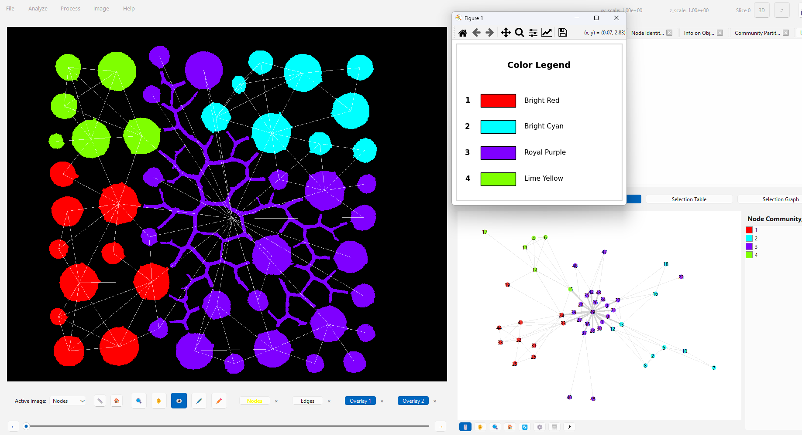
Nodes with communities
Exporting Data
Use File → Save As to export any channels generated or edited in NetTracer3D
in .tif format. For a bulk save, Save As Network3D Object dumps most of
the active data into a new folder in a format that can later be reloaded with
Load Network3D Object.
Tables and networks can be exported by right click as either .csv or
.xlsx files for outside analysis. Networks additionally offer export options
for use with other network analysis software such as Gephi.
NetTracer3D is designed for a degree of end-to-end functionality, but exporting allows downstream analysis in other software such as ImageJ or Microsoft Excel.
Using Network and Image Data in Python
NetTracer3D is primarily designed for GUI use, but its properties can be extracted for use in a Python script. This is most valuable for the network property, which is stored as a networkx graph object, giving access to the entire networkx toolbox for custom analysis pipelines. See https://networkx.org/ for information on using the networkx graph object.
Many properties are organised into the Network_3D class. The simplest export
route is to save the Network_3D object from the GUI, then create a new
Network_3D object in Python, load its components from the saved data, and
access the properties directly:
from nettracer3d import nettracer as n3d
my_network = n3d.Network_3D() #Declare a new Network_3D object
my_network.load_network(file_path = 'path/to/my/network/file/that/netracer3d_gui/had/saved/output_network.csv') #If we just want to load the networkx graph
my_network.assemble(directory = 'path/to/my/directory/where/netracer3d_gui/saved/the/network3d_object') #If we want to load all the properties. Note that this function looks for the files with the names that the 'Save (As) Network 3D Object' option assigned them.
#Using the properties in code directly (Note these will return None if they had not been assigned to anything - ie, if the file used to .assemble() was missing them):
nodes = my_network.nodes #The nodes channel data, as a numpy array
edges = my_network.edges #The edges channel data, as a numpy array
overlay_1 = my_network.network_overlay #The overlay1 channel data, as a numpy array
overlay_2 = my_network.id_overlay #The overlay2 channel data, as a numpy array
network = my_network.network #The network data, as a network x graph object
node_centroids = my_network.node_centroids #Centroids of nodes, as a python dictionary
edge_centroids = my_network.edge_centroids #Centroids of edges, as a python dictionary
node_communities = my_network.communities #Communities of nodes, as a python dictionary
node_identities = my_network.node_identities #Identities of nodes, as a python dictionary
xy_scale = my_network.xy_scale #The dimensional scaling of the flat xy plane that corresponds to the image used to generate this network, as a float.
z_scale = my_network.z_scale #The z step size of the 3D stack that corresponds to the image used to generate this network, as a float.
#If I do something to the above properties, and want to save, the contents of the Network_3D object can be saved with this method:
my_network.dump(directory = 'path/to/save/the/outputs')
Next Steps
Once you are comfortable generating connectivity networks, proceed to Proximity Networks — Ideal for Cellular Data to learn about building networks based on proximity, which is useful for analysing the spatial arrangement of cells.